STORY ATLAS
故事图谱
沿时间线读故事，循关系网查人物。

三体
刘慈欣 · 三部曲
从红岸的第一声呼唤，到宇宙之外的五公斤生态球。一个文明如何在四百年里，把自己交出去，又抢回来。
68 时间点/32 人物/26 张插图

基督山伯爵
大仲马 · 完整主线
一个人用十四年换来财富，再用十年想清楚要不要用它。
44 时间点/28 人物

百年孤独
加西亚·马尔克斯 · 七代家族
同名的人在不同年代醒来，重复同一种孤独。
45 时间点/26 人物

魔戒
托尔金 · 三部曲
走路的人，比挥剑的人更重要。
44 时间点/27 人物

沙丘
弗兰克·赫伯特 · 第一部
在沙漠里学会骑沙虫的人，也学会了当神。
40 时间点/23 人物

红楼梦
曹雪芹 · 通行一百二十回
一座园子从建起来到散掉，一个家族在体面里慢慢空掉。
52 时间点/40 人物
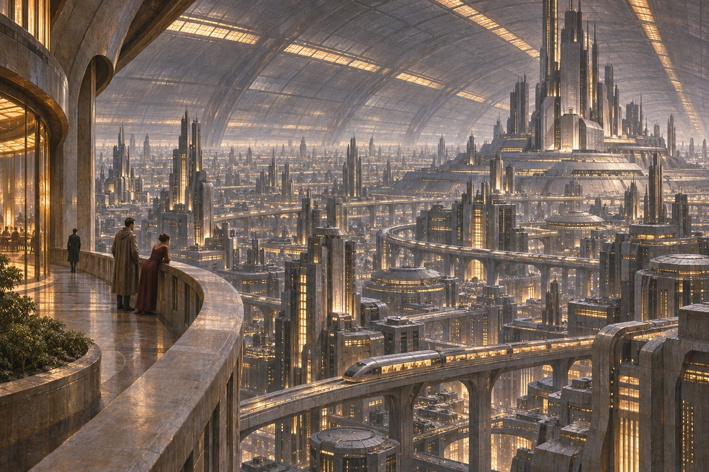
基地
艾萨克·阿西莫夫 · 七部主线
一个用数学预言的未来，和两个试图缩短黑暗的基地。
38 时间点/22 人物

三国演义
罗贯中 · 一百二十回
从桃园结义到三家归晋，近百年的征战与背叛。
49 时间点/35 人物

水浒传
施耐庵 · 一百二十回
一百零八个人，各有各的活不下去。
44 时间点/128 人物

西游记
吴承恩 · 一百回
一只石猴走了十万八千里，八十一难都不是为了吃唐僧肉。
51 时间点/37 人物
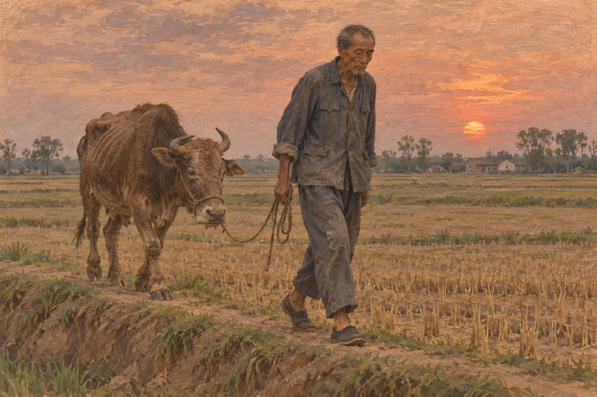
活着
余华 · 长篇
一个人亲手送走所有亲人，最后和一头牛一起活着。
14 时间点/11 人物
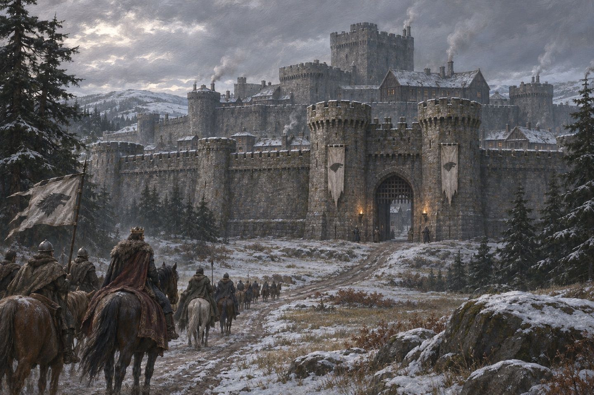
冰与火之歌
乔治·R·R·马丁 · 前三部
七个王国，九个家族，一张铁王座。每个人都以为自己在做正确的事。
34 时间点/42 人物
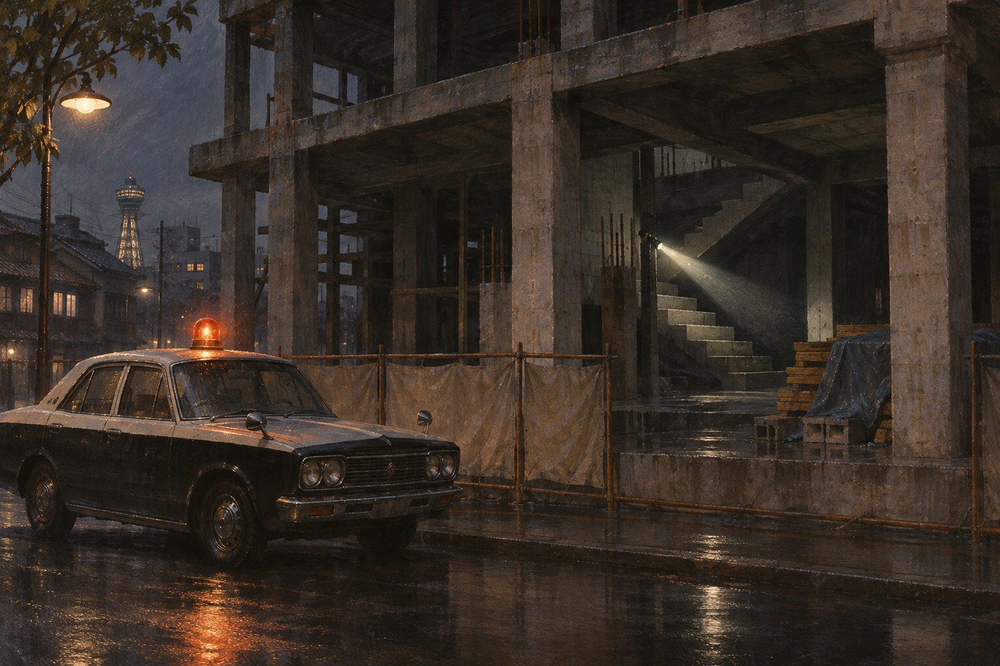
白夜行
东野圭吾 · 长篇
1973年大阪废楼里的命案，连接了桐原亮司与唐泽雪穗此后十九年的人生。
28 时间点/18 人物

嫌疑人 X 的献身
东野圭吾 · 长篇
一个数学家用一条人命，替一对母女摆平了一桩命案。警察查了四个月，方向从一开始就错了。
28 时间点/12 人物

无人生还
阿加莎·克里斯蒂 · 长篇
十个人被请到一座没有退路的岛上，一首童谣，一段一条命。等警察上岛时，一个也没剩。
22 时间点/13 人物
东方快车谋杀案
阿加莎·克里斯蒂 · 长篇
大雪把列车困在荒野，死者身上十二处刀伤。十三个人，十三份完美的不在场证明。
27 时间点/21 人物

漫长的告别
雷蒙德·钱德勒 · 长篇
一个酒鬼，一个侦探，一杯螺丝起子。朋友死了，又活了过来，然后变成了一个陌生人。
26 时间点/13 人物
福尔摩斯探案集
柯南·道尔 · 精选案件
六十年，六十个案子，一个不肯退休的人。他从一顶帽子看出一个人的一生。
23 时间点/16 人物

龙纹身的女孩
斯蒂格·拉森 · 千禧年系列
一个身败名裂的记者，一个被国家监护的女孩，一桩四十年没破的失踪案。
24 时间点/15 人物

消失的爱人
吉莉安·弗林 · 长篇
结婚五周年那天，妻子不见了。丈夫在电视上笑了一下，全国都认定他是凶手。
26 时间点/13 人物
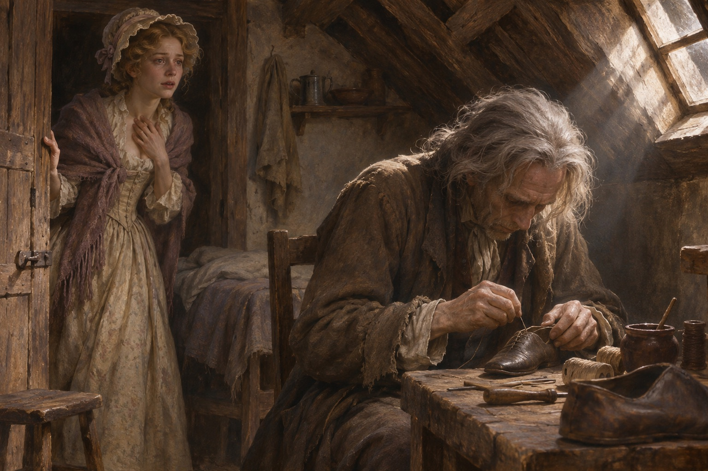
双城记
查尔斯·狄更斯 · 长篇
一个医生被关了十八年，一个贵族放弃了姓氏，一个酒鬼替别人上了断头台。
25 时间点/13 人物
悲惨世界
维克多·雨果 · 长篇
一个人偷了一块面包，坐了十九年牢；一个主教用两个烛台把他买了回来。
30 时间点/14 人物

傲慢与偏见
简·奥斯汀 · 长篇
一个年入一万镑的男人，一个嘴快的姑娘，一句「她不够漂亮」，要用一整本书来收回。
24 时间点/15 人物
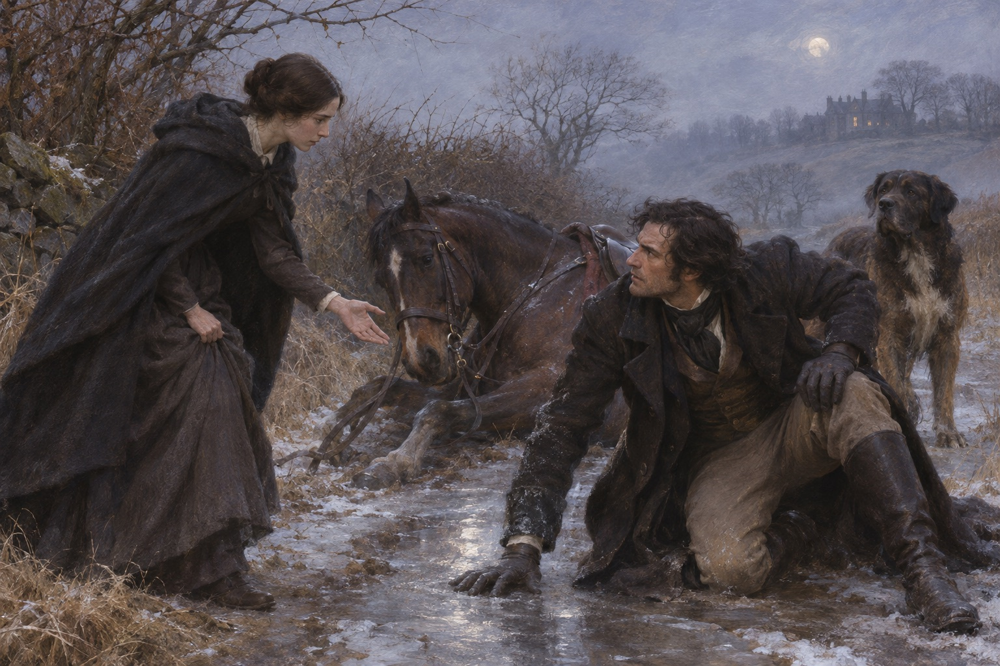
简·爱
夏洛蒂·勃朗特 · 长篇
一个不美、不富、不肯低头的姑娘，爱上一个骗了她的人，然后自己走了出去。
28 时间点/14 人物

呼啸山庄
艾米莉·勃朗特 · 长篇
一个捡回来的孩子，一个嫁错人的姑娘，两座庄园，三代人。
20 时间点/11 人物

战争与和平
列夫·托尔斯泰 · 长篇
五大家族，一场入侵。有人在战场上看见天空，有人在客厅里找活着的意义。
21 时间点/12 人物

安娜·卡列尼娜
列夫·托尔斯泰 · 长篇
一个女人为了爱情抛下一切，一个男人在乡下找活着的意义。
20 时间点/9 人物
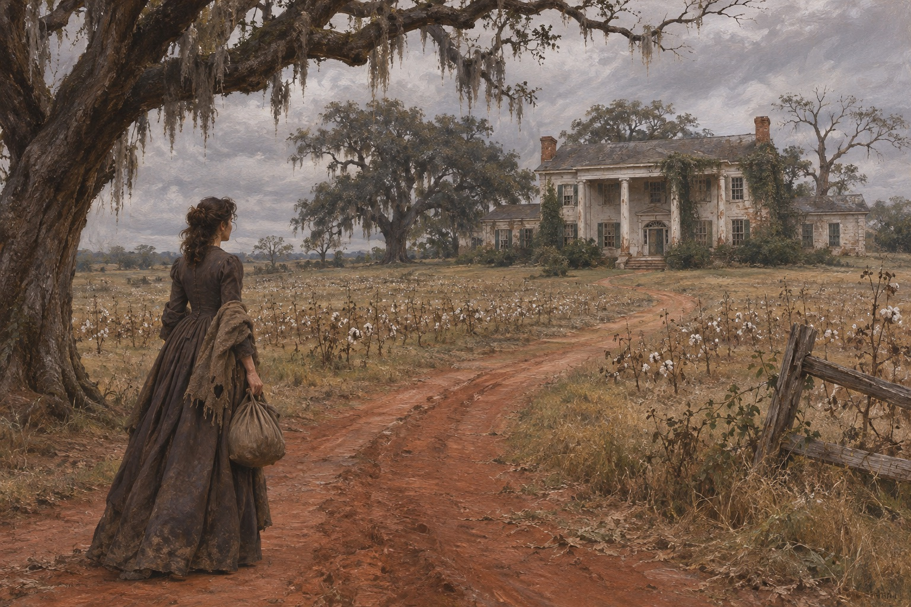
飘
玛格丽特·米切尔 · 长篇
一个姑娘在门廊上想着舞会，一场战争把她的世界烧成了灰。
18 时间点/11 人物

教父
马里奥·普佐 · 第一部
一个西西里家庭在纽约扎根，讲交情，也讲刀。
14 时间点/13 人物

巴黎圣母院
维克多·雨果 · 长篇
一个丑得没人愿意看的敲钟人，一个在广场上跳舞的姑娘。
16 时间点/8 人物
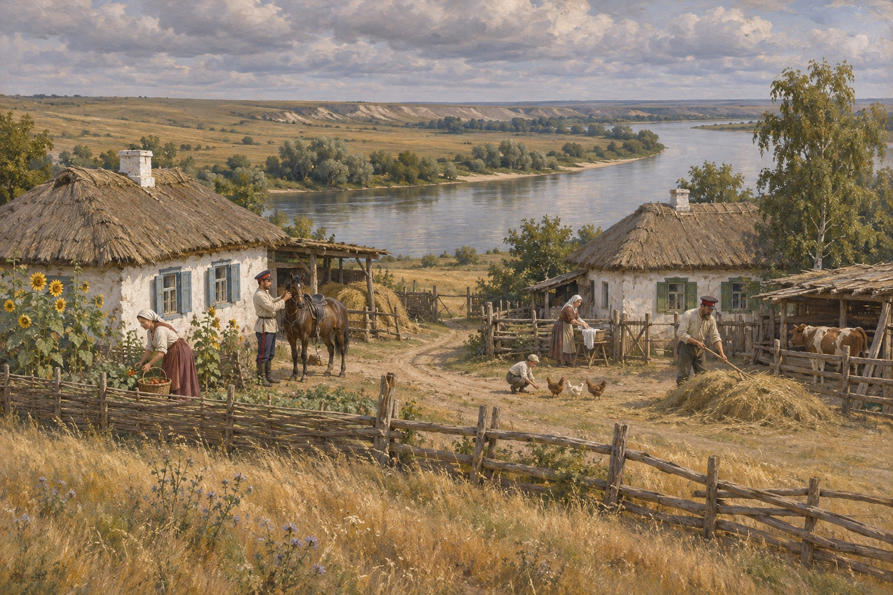
静静的顿河
肖洛霍夫 · 长篇
一个哥萨克农民，爱一个女人，娶另一个女人，在红军和白军之间来回走。
12 时间点/8 人物
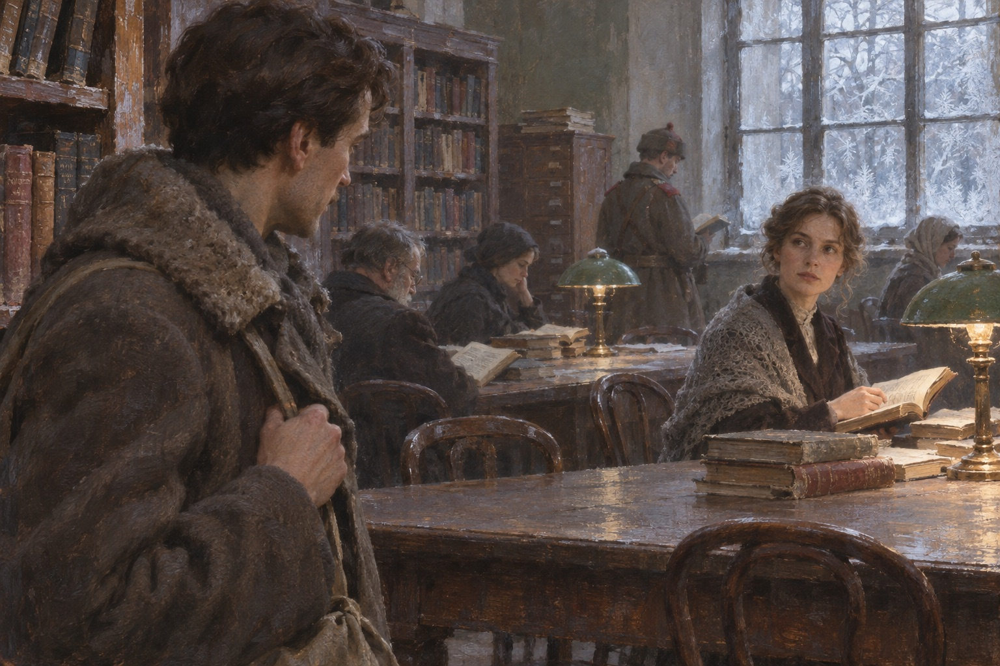
日瓦戈医生
帕斯捷尔纳克 · 长篇
一个医生，一个护士，一场革命。他只想安安静静地活，时代不许。
14 时间点/7 人物
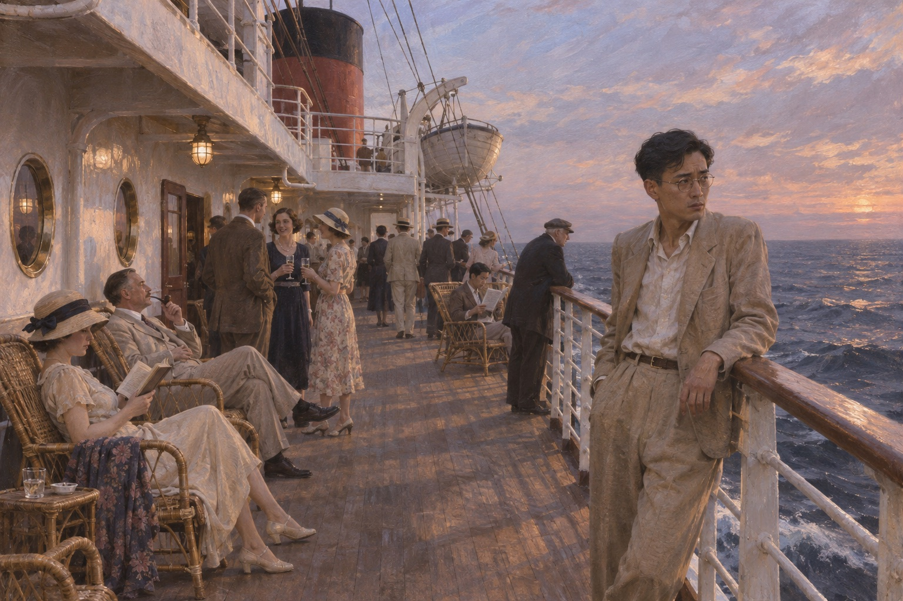
围城
钱锺书 · 长篇
一个买假文凭的留学生，从船上到大学，从恋爱到婚姻，一路走一路退。
16 时间点/7 人物
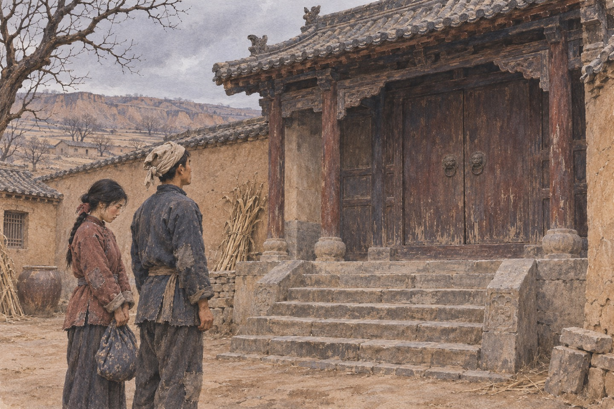
白鹿原
陈忠实 · 长篇
一个族长，一个长工，一块原上的五十年。
15 时间点/10 人物
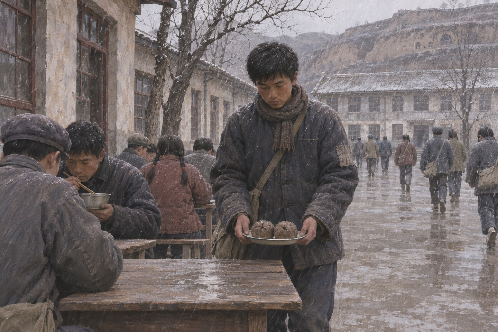
平凡的世界
路遥 · 三部
一个在土里刨食，一个在井下挖煤。日子苦，可他们一直在往前挪。
15 时间点/8 人物

边城
沈从文 · 中篇
一个渡口，一个老人，一个女孩，两个兄弟。什么都没有发生，什么都发生了。
12 时间点/6 人物
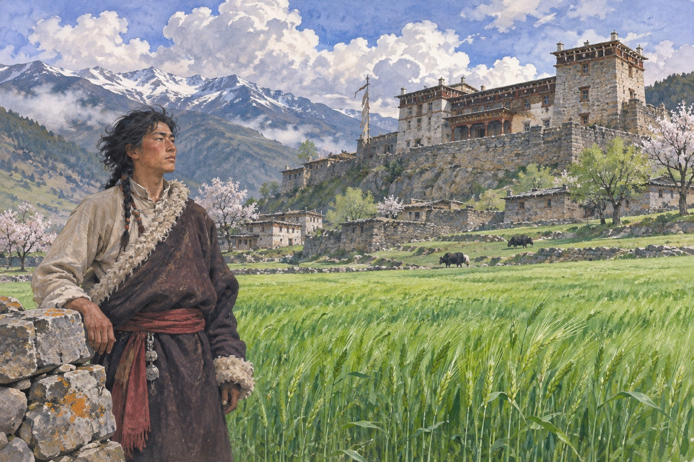
尘埃落定
阿来 · 长篇
一个被所有人叫傻子的少爷，种麦子、开粮仓、建市场，看着一个制度慢慢塌下去。
22 时间点/11 人物
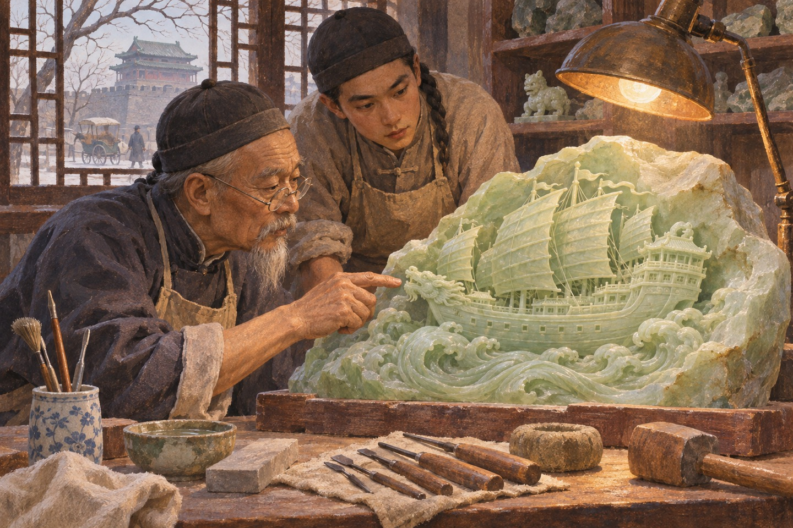
穆斯林的葬礼
霍达 · 长篇
一块玉，一对母女，一个藏了二十年的秘密。她活了二十三年，最后才知道自己是谁。
22 时间点/10 人物
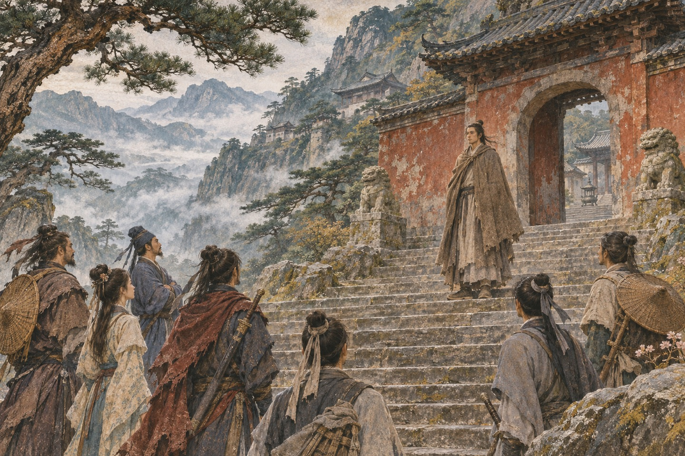
天龙八部
金庸 · 长篇
三个不想当英雄的人，被命运推着走：一个成了异类，一个成了皇帝，一个成了宫主。
23 时间点/17 人物

射雕英雄传
金庸 · 长篇
一个在蒙古长大的汉人孩子，笨得学一套拳要三个月。他一辈子只认一个理：不能忘本。
19 时间点/18 人物
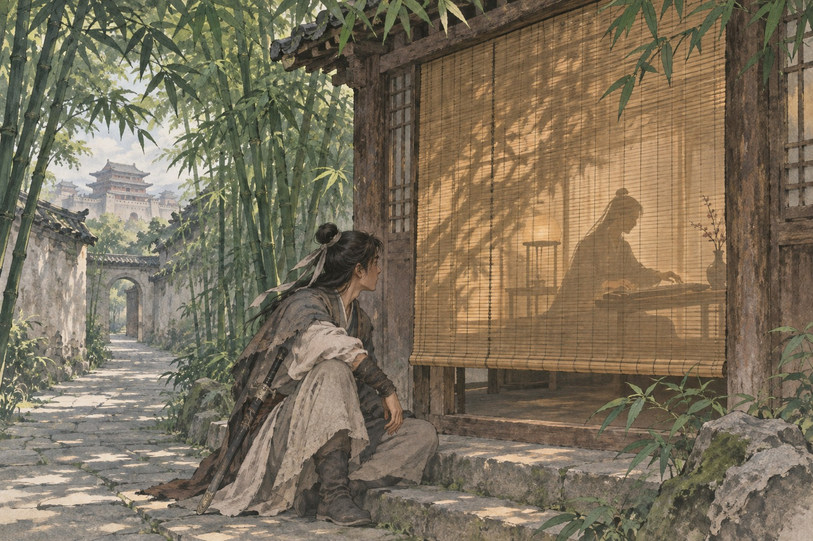
笑傲江湖
金庸 · 长篇
一个爱喝酒的大弟子，被师父逐出门，学了天下第一的剑法，最后什么也没要。
19 时间点/15 人物

鹿鼎记
金庸 · 长篇
一个妓院里长大的小孩，不识字不会武功，靠一张嘴进了皇宫，最后带着七个老婆跑了。
18 时间点/15 人物

一九八四
乔治·奥威尔 · 长篇
一个人想保住一小块自己的脑子，最后连那一小块也被拿走了。
20 时间点/10 人物
美丽新世界
赫胥黎 · 长篇
一个没有母亲、没有痛苦、没有书的世界。所有人都很快乐，除了那个从外面来的人。
18 时间点/8 人物
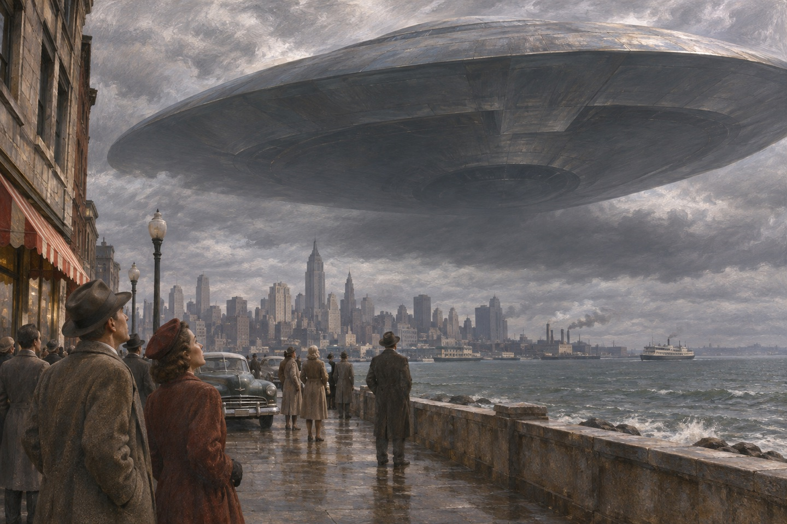
童年的终结
阿瑟·克拉克 · 长篇
超主来了，给了人类一个黄金时代，然后带走所有的孩子。
15 时间点/6 人物

索拉里斯星
斯坦尼斯瓦夫·莱姆 · 长篇
一片会思考的海，把死人还给你。你知道那不是真的，可你还是跟她住了下去。
16 时间点/5 人物
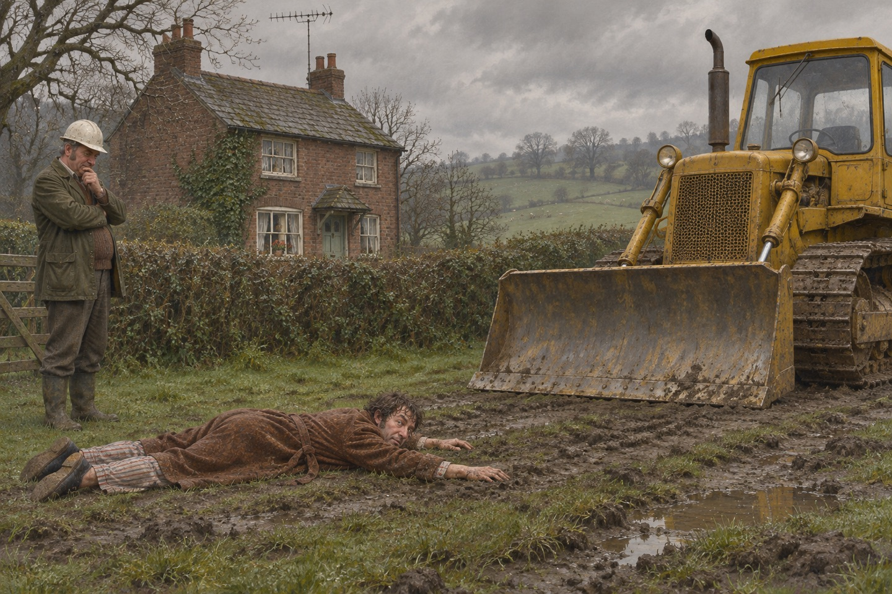
银河系搭车客指南
道格拉斯·亚当斯 · 第一部
地球在星期四被拆了，一个英国人带着一条毛巾逃了出来。宇宙很大，答案很小：42。
15 时间点/5 人物
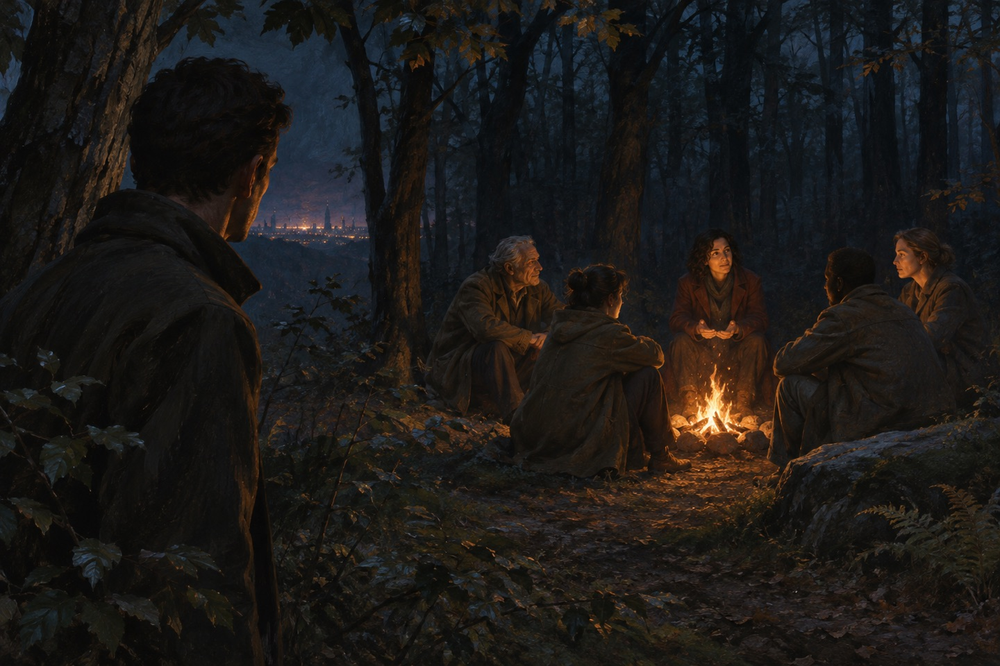
华氏 451
布拉德伯里 · 长篇
一个烧书的人，某天翻开了一本。他没打算改变什么，可他已经回不去了。
15 时间点/6 人物

与拉玛相会
阿瑟·克拉克 · 长篇
一根巨大的圆柱飞进太阳系，人类进去看了一圈，出来时它已经走了。
15 时间点/5 人物
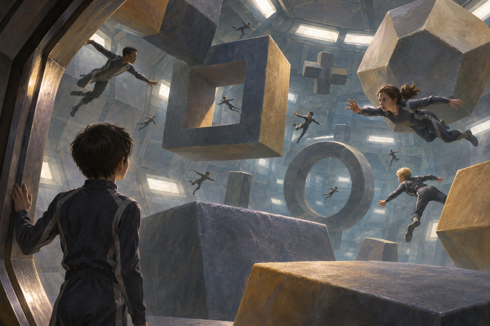
安德的游戏
卡德 · 第一部
一个六岁的孩子被带走，训练了五年，打赢了一场战争。他以为那是模拟。
16 时间点/7 人物

神经漫游者
威廉·吉布森 · 长篇
一个被烧坏的牛仔，一个装刀片的杀手，一个想合并自己的人工智能。
14 时间点/7 人物

海伯利安
丹·西蒙斯 · 第一部
七个人去一个地方，找一个不该找的东西。路上他们讲了自己的故事，一个比一个糟。
14 时间点/9 人物
纳尼亚传奇
C.S.刘易斯 · 七部
一个衣柜，一盏路灯，一百年的雪。四个孩子进去，出来时已经做了很多年的国王。
16 时间点/16 人物
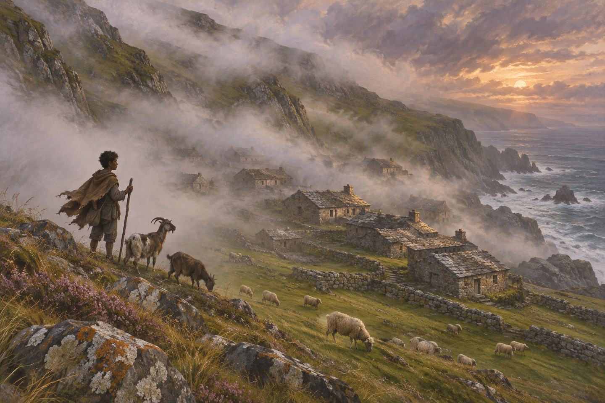
地海传奇
勒古恩 · 前四部
一个学得太快的男孩，放出了自己的影子，追了它半辈子。最后他转过身，抱住了它。
15 时间点/7 人物

猎魔人
萨普科夫斯基 · 全本
一个被改造过的人，在两边都不讨好的地方，选一个自己觉得对的。
16 时间点/7 人物

美国众神
尼尔·盖曼 · 长篇
一个刚出狱的人，陪一个老头跑遍美国，去见一些过得很差的神。
16 时间点/6 人物
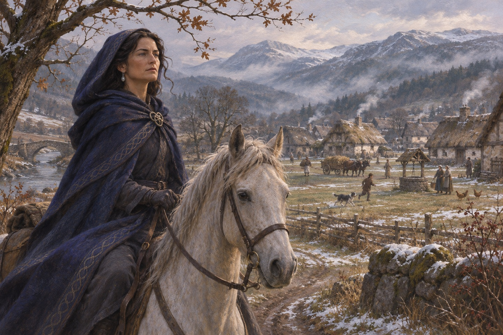
时光之轮
罗伯特·乔丹；布兰登·桑德森续完 · 十四卷选录
三个从偏远村子出来的年轻人，一个被预言选中，两个跟着他走。
17 时间点/6 人物
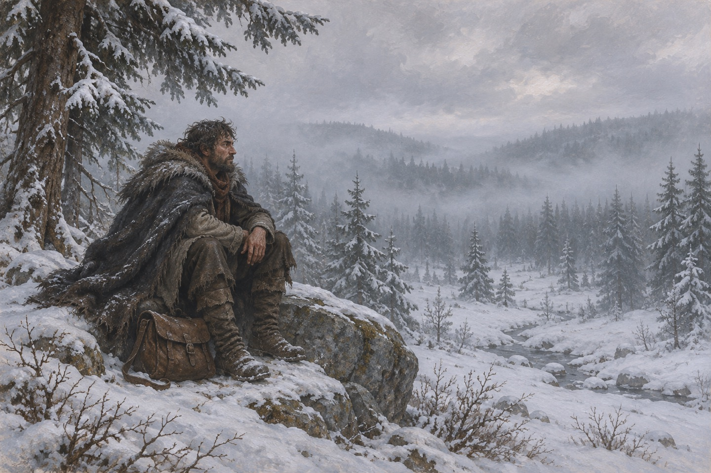
第一律法
乔·阿克罗比 · 三部曲
一个想退休的杀手，一个自恋的剑士，一个瘸腿的审讯官。
12 时间点/5 人物
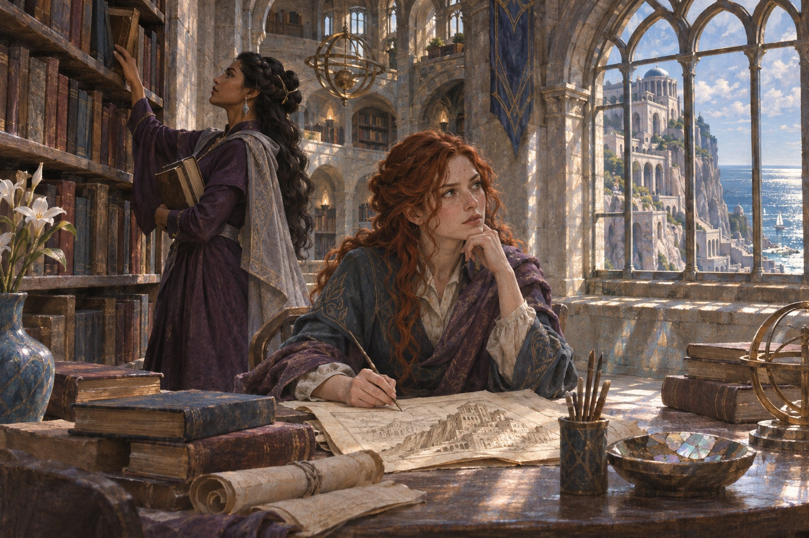
飓光志
布兰登·桑德森 · 前两部
一个奴隶带着一群桥夫逃出来，成了骑士。他说：我这一辈子，只想护住几个人。
14 时间点/6 人物